原稿を Google ドライブにも自動で保存する（見た目の案）
どの案も、書くたびにこのブラウザに保存し（今と同じ）、書くのをやめて数秒〜十数秒後にドライブにも送ります。写真は入れたときに1枚ずつ送ります。案ごとに違うのは、ドライブにつなぐ入口と、保存のようすの出し方です。いちばん下の「どの案でも共通」の窓は、どの案を選んでも同じです。
案1 保存の表示を1つにまとめる
今の「自動保存」の表示が、ドライブの保存のようすに変わるつないでいないときは「この端末だけに保存」（黄色）と「ドライブにつなぐ」ボタン。つないだあとは「ドライブに保存 13:44」と出し、押すとドライブの操作（今すぐ保存・読み込み直す・この端末から消す）が開く。右の欄がほとんど今のまま
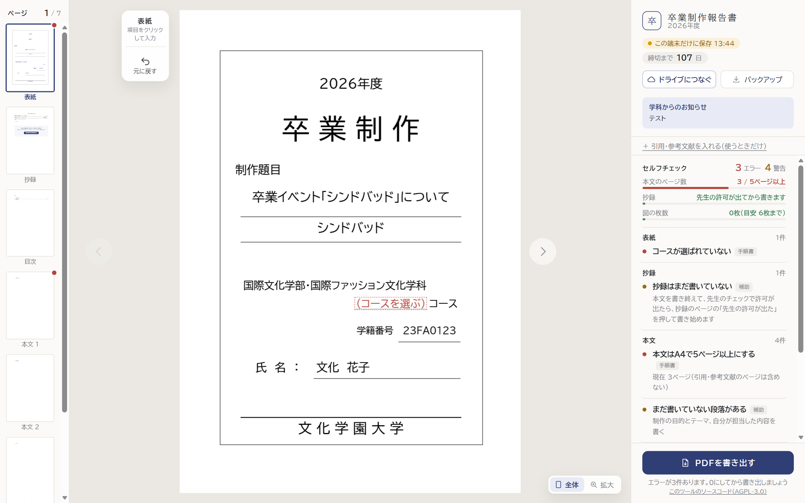
画面全体（つないでいないとき）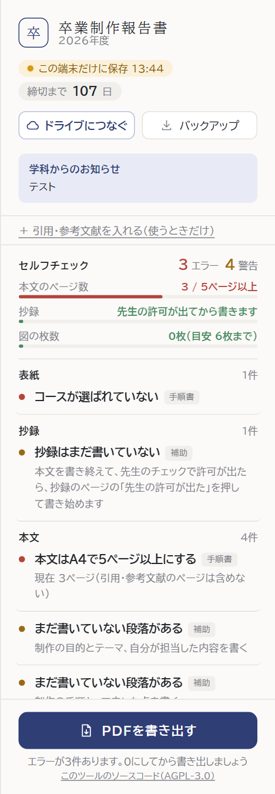
右の欄：つないでいないとき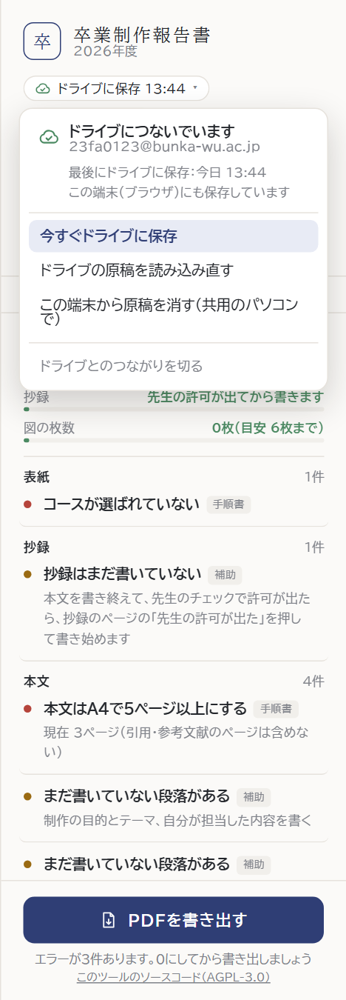
右の欄：つないだあと（「ドライブに保存 13:44」を押したところ）
案2 ドライブの欄を置く
右の欄に「Google ドライブ」の枠を置き、つなぐボタンと保存のようすをまとめる何ができるかの説明とボタンが常に見えるので、気づきやすい。つないだあとは枠が小さくなり、「⋯」から操作する。今の「自動保存」の表示はそのまま残る（この端末への保存）。右の欄が少し縦に長くなる
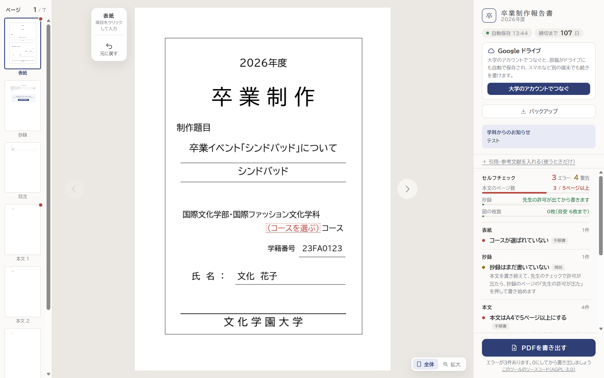
画面全体（つないでいないとき）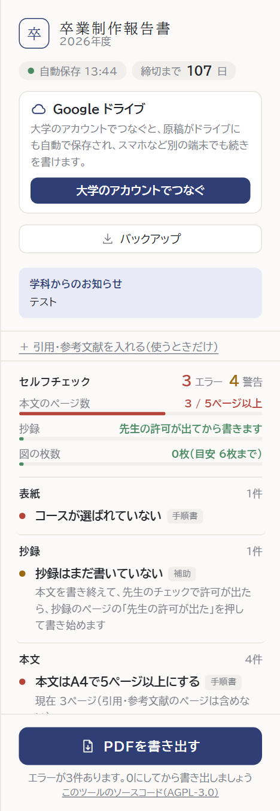
右の欄：つないでいないとき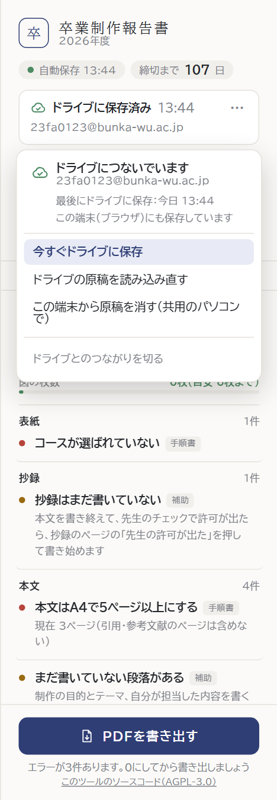
右の欄：つないだあと（「⋯」を押したところ）
案3 はじめに一度だけ聞く
ツールを開いたときに「ドライブにも保存しましょう」と一度だけ聞く学生がつなぎ忘れにくい。表紙の案内が終わったとき（すでに書き始めている学生は、次に開いたとき）に出す。「あとで」を選んだら、右の欄に「ドライブにつながっていません つなぐ」を細く出し続ける。つないだあとの表示は案1と同じ
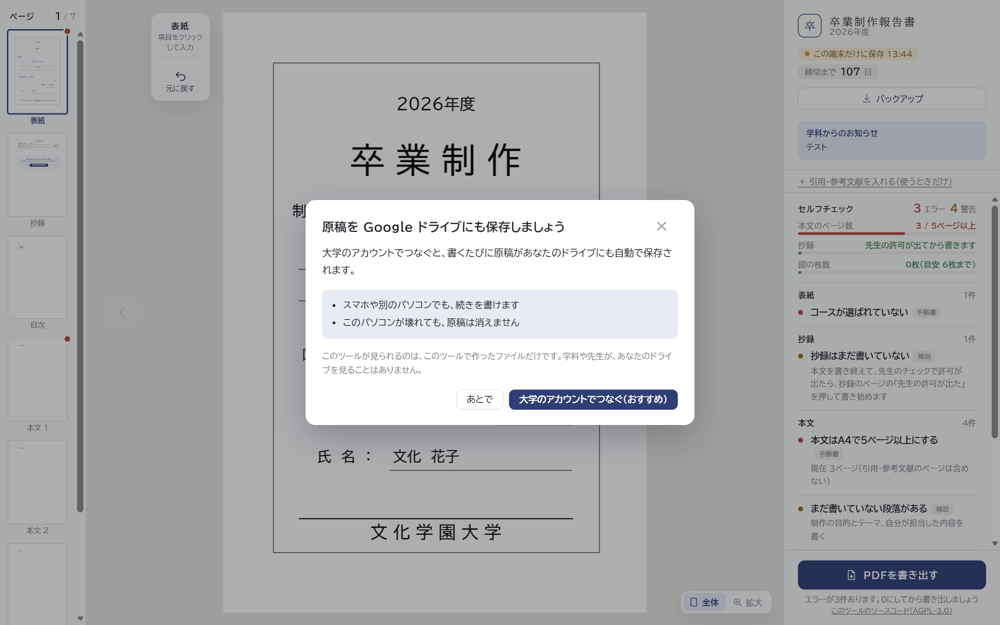
画面全体（はじめに出す窓）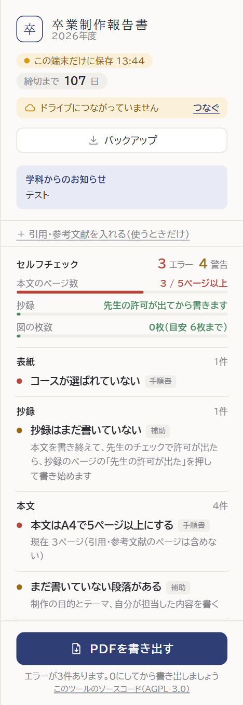
右の欄：「あとで」を選んだあと右の欄：つないだあと（案1と同じ）
保存のようす（4つの状態）
保存しているとき・保存できたとき・電波がないとき・ログインが切れたとき電波がないときも、この端末には保存し続け、つながったら自動で送ります。ログインが切れたときだけ、学生に「ログインし直す」を押してもらいます
保存しています保存できた電波がないログインが切れた
案1・案3
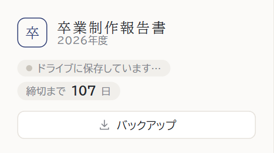
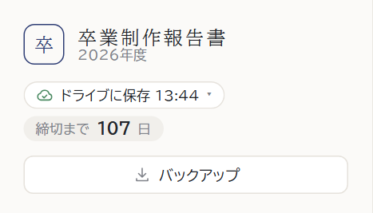
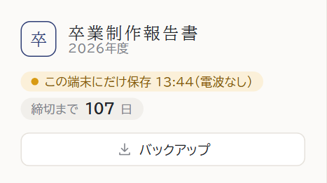
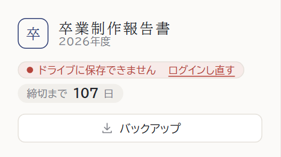
案2
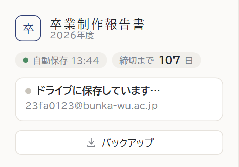
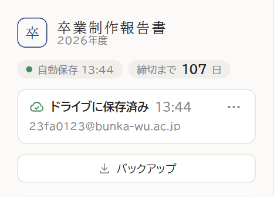
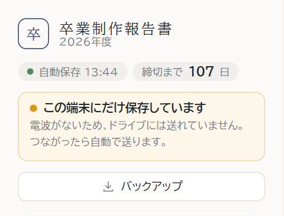
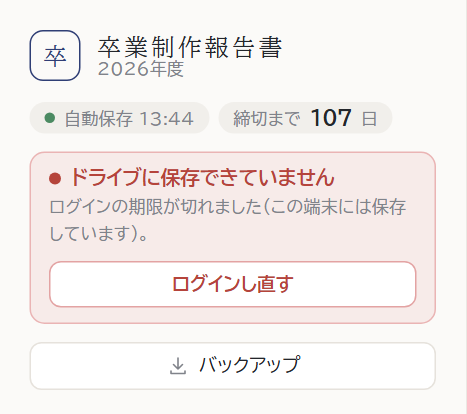
スマホ
上の帯に保存のようす（☁ 13:44）、メニューの中にドライブの操作案3は、はじめに聞く窓をスマホに合わせた形
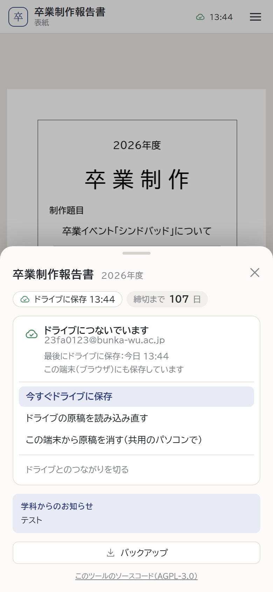
案1（メニューを開いたところ）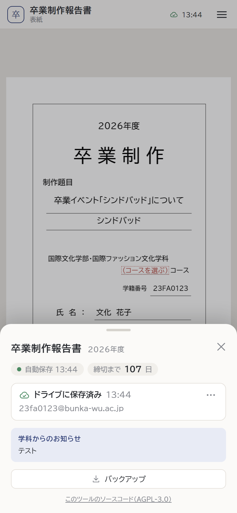
案2（メニューを開いたところ）
どの案でも共通
新しい端末で開いたときはじめの案内（コースを選ぶ）の下に「ドライブから続きを開く」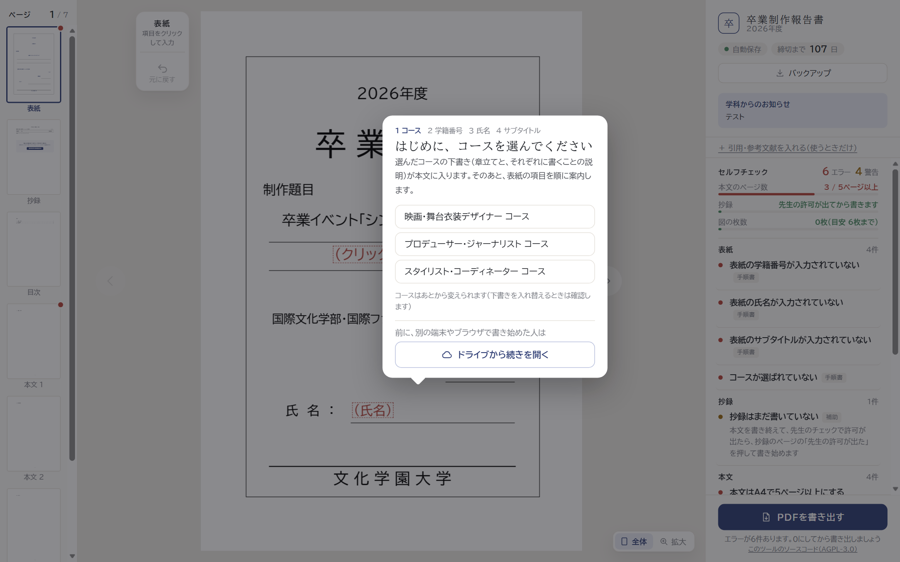
別の端末で書いた新しい原稿があるとき保存した時刻と字数を並べて選ぶ。選ばなかった方は「自動の控え」に残る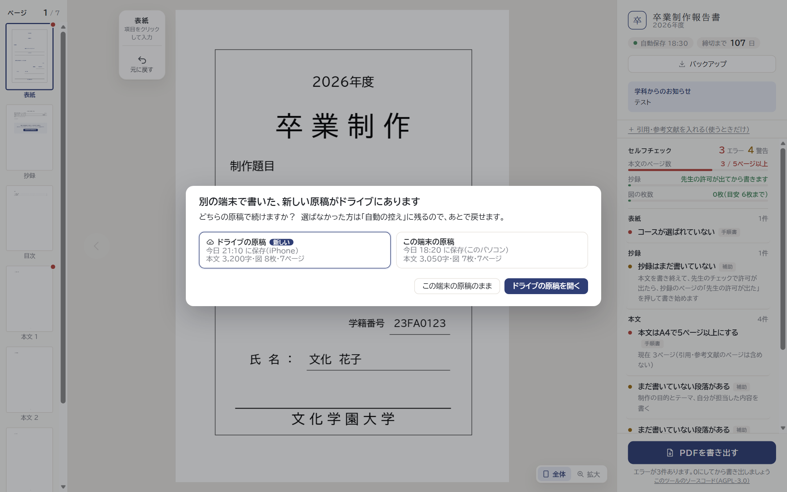
共用のパソコンで書き終えたときドライブの操作の「この端末から原稿を消す」を押したときの確認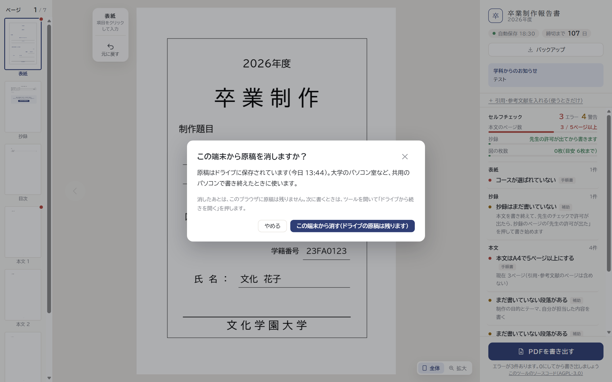